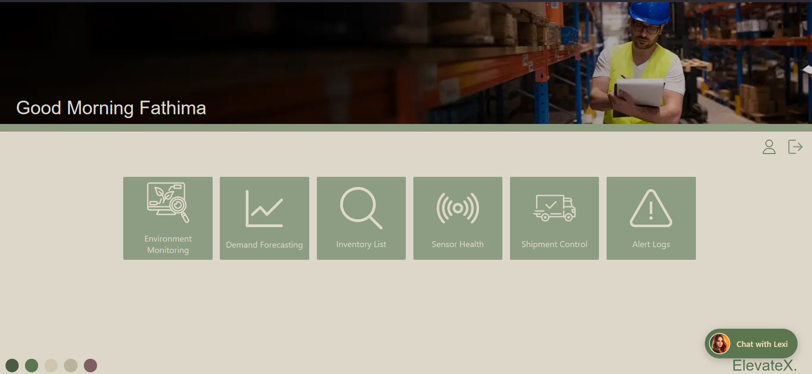
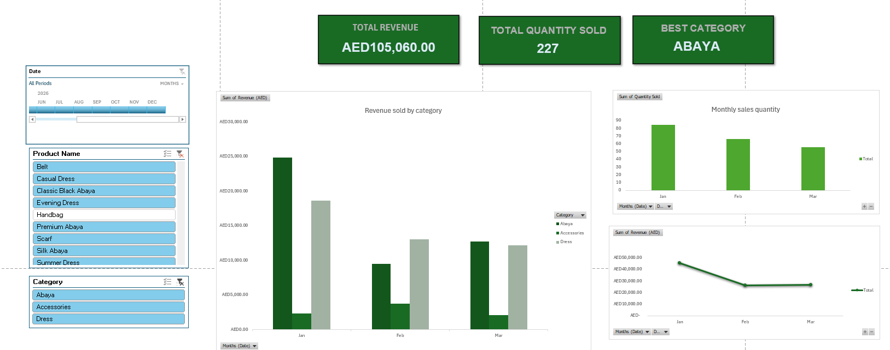
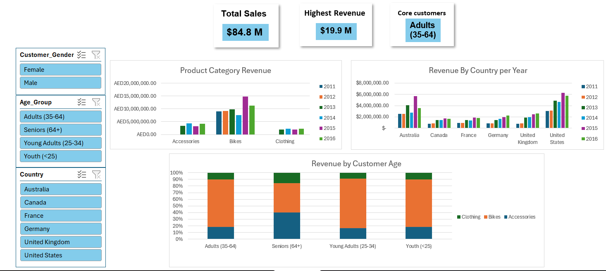

Featured Projects

ElevateX
Smart warehouse management system integrating RFID tracking, shipment verification, inventory monitoring and operational dashboards.

Interactive Boutique Sales Dashboard
Interactive Excel dashboard designed to analyze sales revenue, quantity sold and product performance.

Interactive Bike Sales Dashboard
Interactive Excel dashboard analyzing yearly revenue, country-level performance, product categories and sales trends using dynamic data visualizations.
Big Data Management & Analytics
Data management project involving data lake architecture, ELT workflows and Power BI dashboards.

Recipe Sharing Website
Full-stack recipe sharing platform with responsive design, authentication and database integration.